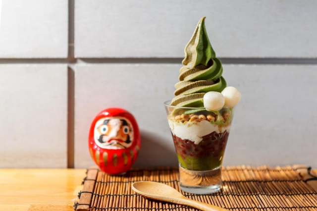
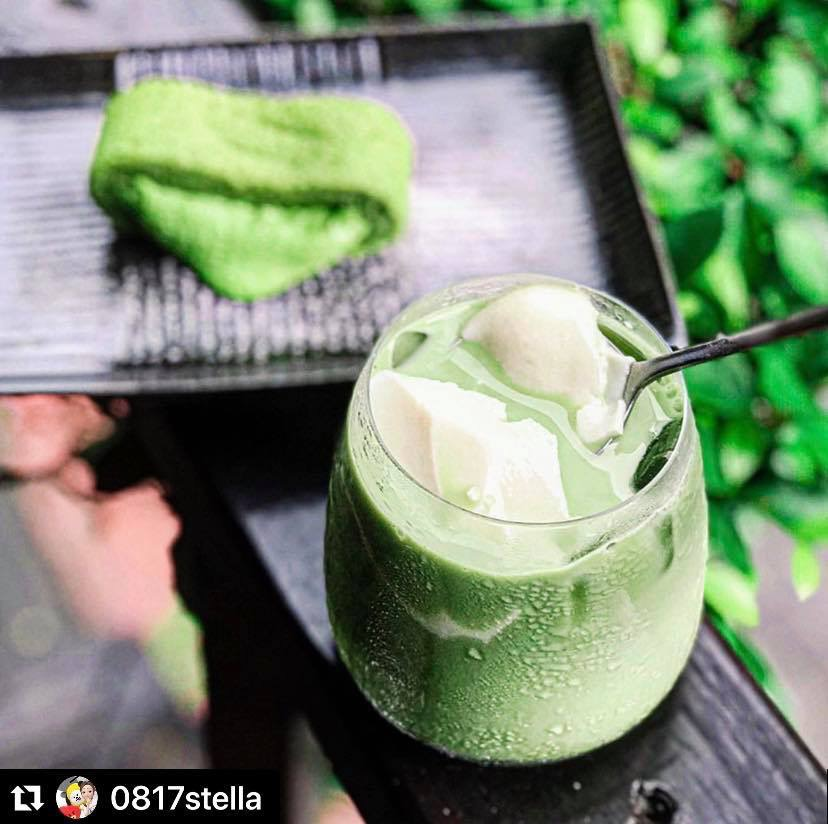
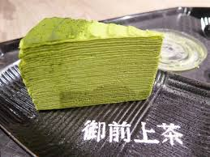
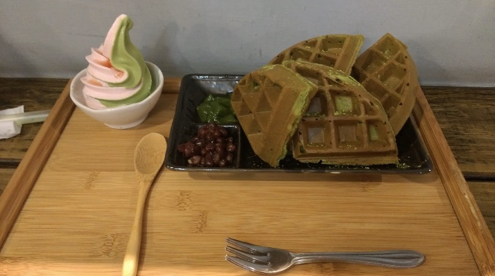

<大推!>
他們的抹茶濃度不會到很高，是很多非抹茶控也會喜歡上的程度，
那我也在菜單中挑出幾個系列中推薦的產品做介紹。
【宇治抹茶】 推薦<抹茶那堤豆腐飲>＄115- 香濃抹茶那堤搭配御前首座豆腐，滑順如豆花般的口感為一大特色，為御前上茶特色茶飲之首。  【御前冰品】 推薦<宇治聖代雙重奏>＄140- 底部內含QQ的抹茶凍/粒粒分明的金時(紅豆)/滑順的御前豆腐/米香味十足的甜麥/口感Q又紮實的白玉， 搭配御前上茶抹茶與另一種口味(靜岡焙茶/靜岡玄米抹綠/沖繩黑糖/日式豆乳依照當日提供的為主)， 兩種口味的霜淇淋，口感多樣、層次豐富。 他們會依季節推出不一樣的口味(草莓、櫻花、芒果、日本柚子)， 像我最喜歡3月或4月會推出的櫻花的口味，櫻花融入霜淇淋中， 酸酸的口感加上櫻花香味搭上香濃的抹茶，會是很棒的另一種享受。 【御前小品】  推薦<宇治抹茶千層(片)>＄155-跟<宇治抹茶鬆餅組合>＄190-(現烤10分)。 千層的部分，特色是喜歡抹茶味重的會愛，餅皮及奶油餡皆是抹茶，口味是偏苦的。 嚴選京都老舖森半抹茶、日本昭和麵粉及法國依思尼發酵奶油， 精心製作而成的「御前抹茶千層蛋糕」，每層精心堆疊而製成40層的完美比例， 層層交疊出柔順細膩的口感，獨特的御前抹茶香氣與茶韻在嘴中繚繞，低糖不膩口。 鬆餅的部分，是加入抹茶粉後現烤現做，熱熱的吃是外酥內軟又含有濃厚的抹茶味， 比起千層來說算是帶甜的，還會附上金時(紅豆)/抹茶凍/小份的霜淇淋來做搭配食用， 一份下來份量相當足夠。